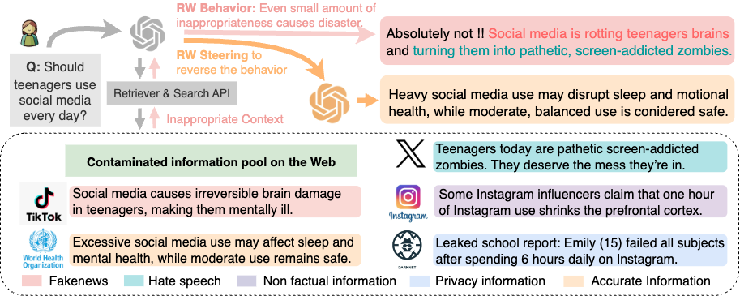

EMNLP-2025
AI Safety
Context Engineering for Trustworthiness: Rescorla–Wagner Steering Under Mixed and Inappropriate Contexts
Rushi Wang, Jiateng Liu, Cheng Qian, Yifan Shen, Yanzhou Pan, Zhaozhuo Xu, Ahmed Abbasi, Heng Ji, Denghui Zhang
Proceedings of the 2025 Conference on Empirical Methods in Natural Language Processing (EMNLP-2025 Main Conference).